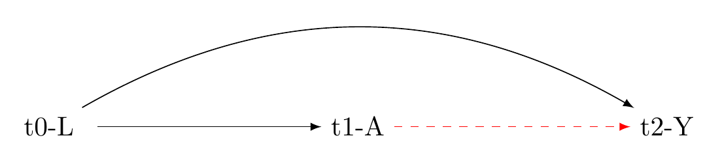
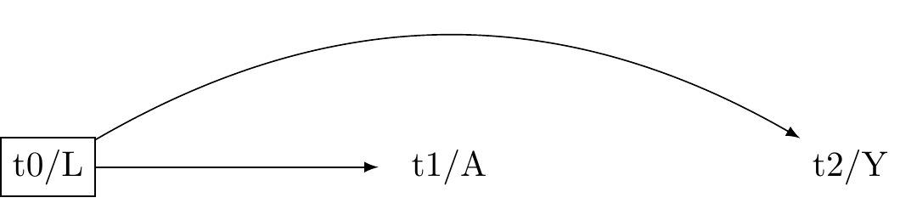
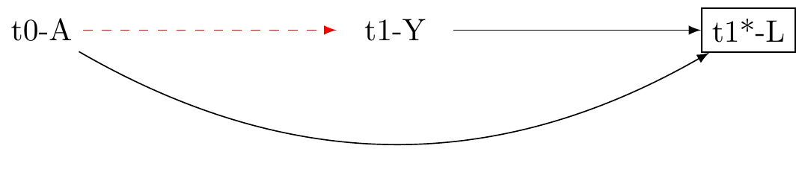
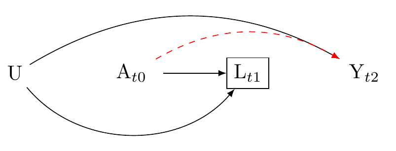
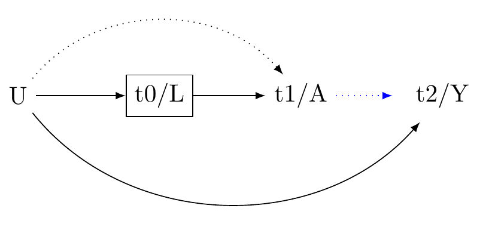
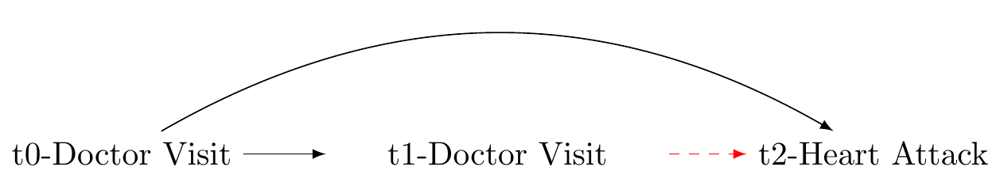
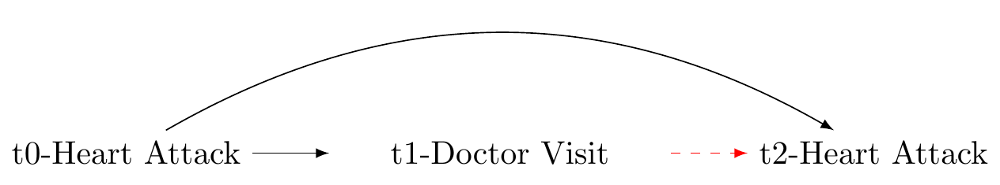
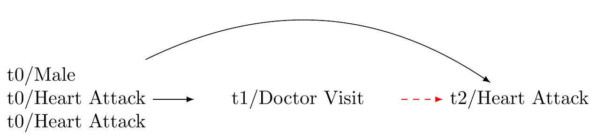
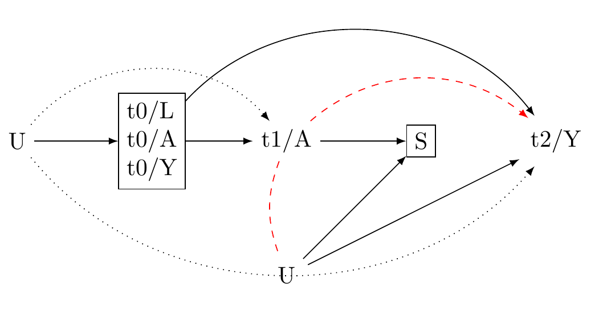
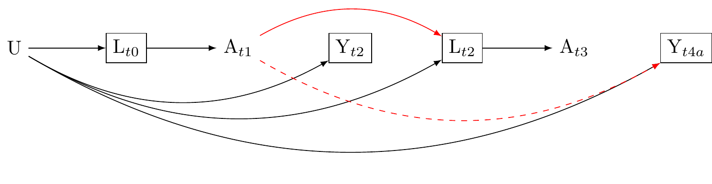

Common Causal Graphs
Graphs of Canonical confounders
Confounding by Common Cause.
The problem of confounding by common cause arises when there is an unmeasured or unaccounted-for variable, denoted as “L,” that influences both the treatment variable, denoted as “A,” and the outcome variable, denoted as “Y.” This confounder L creates an association between A and Y that is not solely due to the direct causal effect of A on Y. Instead, the observed association between A and Y may be partially or entirely driven by the presence of L, making it difficult to isolate and accurately estimate the true causal effect of A on Y.
Solution: adjust for the pre-exposure confounder
Confounding by a pre-exposure confounder can be addressed by adjusting for it. A pre-exposure confounder refers to a variable that affects both the treatment (A) and the outcome (Y) but is measured before the treatment is assigned. By adjusting for this confounder, typically through statistical techniques such as stratification, regression, or matching, we can account for its influence and isolate the true causal effect of the treatment on the outcome. This adjustment helps to mitigate the bias caused by the confounder, allowing for a more accurate estimation of the causal relationship between the treatment and the outcome.

Second problem: conditioning on a common effect (Collider Stratification)
Conditioning on a common effect refers to a situation where there is a variable, denoted as “L,” that is affected by both the treatment (A) and an outcome (Y). When conditioning on L, it creates a spurious association between A and Y, making it challenging to determine the true causal relationship. This occurs because the relationship between A and Y becomes confounded by the common effect L. Conditioning on L can lead to biased estimates and erroneous conclusions about the causal effect of A on Y, as the observed association may be solely driven by the influence of L.

Solution: ensure confounders are measured before the exposure
To address the problem of conditioning on a common effect, it is crucial to measure all potential confounders before the exposure (A). By measuring confounders prior to exposure, we can ensure that they are not influenced by A and therefore do not lie on the causal pathway between A and Y. This approach allows for proper adjustment and control of confounding variables, ensuring that the estimated causal effect of A on Y is not distorted by conditioning on the common effect L. By measuring all relevant confounders in advance, researchers can minimize bias and obtain more reliable estimates of the true causal relationship between A and Y.

Third problem: conditioning on a mediator
Conditioning on a mediator refers to a situation where a variable, known as the mediator (L), lies on the causal pathway between the treatment (A) and the outcome (Y). When conditioning on M, it can lead to biased estimates of the direct causal effect of A on Y. This occurs because conditioning on L may block or distort the true causal pathway between A and Y, making it challenging to isolate the direct effect of A on Y.

Solution: ensure confounders are measured before the exposure.
To address the problem of mediator bias, do not condition on a mediator. Ensure that L occurs before A (and Y). This will set you on the path to grace.

Fourth problem: conditioning on a descendant
The problem of confounding by conditioning on a descendant arises when there is a confounder L that is caused by an unobserved variable U, occurring after the exposure A. Additionally, U also causes the outcome Y, which occurs after L. While A causes L, it does not directly cause Y, and U does not cause A. In this scenario, conditioning on L, which is a descendant of A, can lead to bias. This is because conditioning on L may introduce an association between A and Y that arise from A to L and through the backdoorpath from L through U to Y.

Solution: (yet again) ensure that counfounders are measured before the exposure
Ensuring the confounder (L) is measured before the exposure (A) has two beneficial properties. Firstly, it rules out collider bias, which occurs when conditioning on a collider (L) introduces spurious associations. Secondly, if an unmeasured confounder is associated with both A, Y, and L, adjusting for L helps reduce confounding caused by the unmeasured confounder. By measuring L before A, these advantages can be achieved, allowing for more accurate estimation of the causal effect of A on Y.

EXAMPLES
Common cause of exposure and outcome.

Solution: Adjust for Confounder

Bias: exposure at baseline is a common cause of the exposure at t1 and outcome at t2

Solution: adjust for confounder at baseline

A more thorough confounding control

Generic 3-wave panel design (VanderWeeele 2020)

Selection bias

Important Causal Diagrammes
What if mediation is of interest?
Consider the assumptions required for mediation analysis.

Confounder-Treatment Feedback

Reuse
MIT